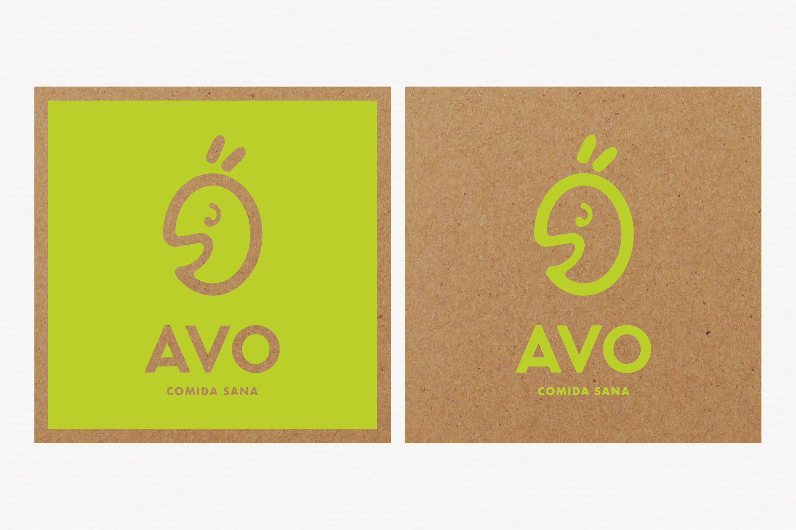
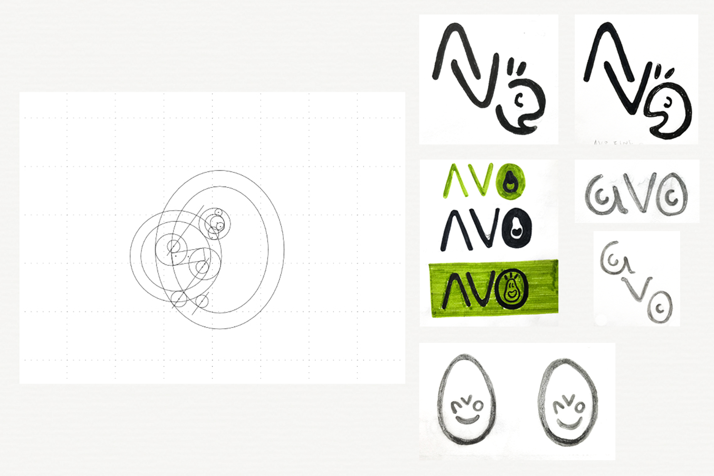

AVO nace de avocado, aguacate en español. El concepto es para un restaurante de comida sana en México. En la categoría fast-casual, AVO busca diferenciarse con un espíritu juvenil, alegre, fresco y dinámico. El proyecto tiene fuertes bases tecnológicas para hacer más eficiente cada proceso y que la comida llegué perfecta a su destino.
SOLUCIÓN
El diseño juega con la forma del aguacate tomando su contorno. Los trazos del personaje se basan en curvas orgánicas que buscan transmitir alegría y amabilidad, que es lo que causa a nuestro cuerpo comer alimentos saludables. Se adoptó el lenguaje de diseño de start-ups de tecnología con formas legibles y fluidas.


PROCESO DE DISEÑO
Se hicieron pruebas de color y tipografía para buscar transmitir la identidad de la marca. Los primeros bocetos se enfocaban en el aguacate visto de una forma más caricaturesca y fue evolucionando hasta convertirse en un personaje orientado a todas las edades.
TRABAJO EN PROGRESO
El proyecto está en desarrollo, habrá actualizaciones constantes.